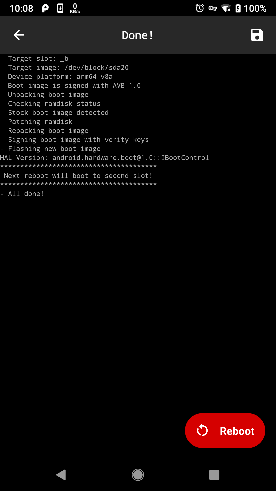

之前一直使用 TWRP 和 SuperSu 来 root 手机。但是最近发现 SuperSu 貌似已经不维护了，所以寻找了一个替代方案：Magisk，其实 root 方式和之前没啥大的变化，但是还是觉得应该记录下，供自己以后以及他人参考。
2020/12 月更新：本文提及的 root 方法已经过时，推荐根据官网教程安装 Magisk 即可，大多数新手机都可以直接通过 Patching Images 的方式来安装。
Root 介绍
所谓 Root 也就是使手机可以获得超级管理员的权限，Andoird 系统是基于 Linux 内核的，但是出于安全角度的考虑，默认并不提供超级管理员的权限，所以获取 su 的权限的过程就变成了人们常说的 Root。
Root 方式有很多种，主要分为两大类：使用第三方 App 或者通过进入 Recovery 模式刷写 root 包。
这两种方式各有各的优势。第一种方式的优点是方便简单，只需要安装一个 app 然后按照 app 中的提示进行操作即可完成 root，但是缺点是成功率不高，而且需要自己去寻找适用于自己手机的 app。而第二种方式的优点是成功率高，但是操作相对比较复杂。
本文介绍的 root 方式就是基于第二种方式的。
我们首先需要刷入 TWRP，它是一个定制的 recovery，有了它之后我们就可以修改我们的系统了，比如 root 手机或者刷入第三方定制 ROM，总之有了它之后我们的手机就可以干很多之前干不了的事了。BTW，这个项目是开源，开源地址在这里：android_bootable_recovery。
其次，我们需要通过 TWRP 刷入 Magisk 来获取 Root 权限。Magisk 是一个开源的工具，提供了针对 Android 手机的 root、boot 脚本、SELinux 补丁包等许多强大的功能。它是 SuperSU 的完美替代解决方案，不过仅针对 Android 5.0 以上的系统。
Root 步骤
准备工作
首先，我们需要安装下载好对应你手机版本的 TWRP。进入 TWRP 下载页，找到对应你的手机品牌的制造商，然后选择型号。
以 Pixel XL 为例，首先找到 Google，然后选择 Google Pixel XL (marlin)，最后根据你手机的版本选择美版 Primary (Americas) 或欧版 Primary (Europe)。
Q：如何查看手机的版本？
A：打开 Settings 搜索label或标签，找到Regulartory labels或监管标签，点开后不管你的 MODEL 是什么，如果有看到 European Union 则代表你使用的是国际版，则直接下载欧版的 TWRP，否则如果看到 United States of America 则是美版。
下载完 TWRP 之后，我们还需要到 Magisk release 下载最新版本的 Magisk。
最后，请确保你已经下载了 Android Platform Tools，其中包含了 adb fastboot 等我们接下来需要用到的命令行工具（如果你是安卓开发请忽略这条）。
刷入 TWRP 和 Magisk
首先确保你的手机已经解锁，解锁方式请参考：Factory Images
重启手机进入 bootloader:
1
adb reboot bootloader
刷入 TWRP，不同手机的刷入方式不同，具体请参考你的 TWRP 下载页。
刷入 Magisk，首先把 Magisk 的 .zip 包放到 sd 卡中，然后重启进入 recovery:
1
adb reboot recovery
进入 TWRP 后，选择 Install，选择 Install zip，找到 Magisk .zip 包的位置，选中后右滑确认刷入。你也可以参考这个 Guide 进行安装。
等待刷入完毕，成功后重启手机。
安装 Magisk Manager，用于管理 app 的 root 权限，也可用来刷入一些基于 Magisk 开发的 module，注意谨慎尝试，有的 module 兼容性不佳，可能导致手机无法重启。发生这种情况就只能重刷系统了，如果重刷保留数据的话，那么记得先使用 Magisk-uninstaller 把 Magisk 卸载掉，不然再次安装 Magisk 会导致机子无法启动。
Root 之后如何更新系统
Root 之后我们就无法通过 OAT 直接更新系统了，一般需要绕过系统的检测，比如 Pixel 系统更新时会检测系统完整性，如果检测到你已经 root 过了会提醒你需要先恢复到 factory image 才能继续更新，这个时候我们需要这样操作：
- 在 Magisk Manager 中点击 Uninstall，选择 RESTORE IMAGES
- 在系统更新里下载并安装更新，安装完成后不要点击重启
- 回到 Magsik Manager 中，在 Magisk 一栏点击 Install - Install Magsik - Install to inactive slot，之后会下载并安装最新版本的 Magisk。
- 最后点击重启整个更新就完成了。

其它机型操作方式也大同小异，请自行搜索，比如一加氧 OS 就不需要先卸载，OTA 更新后直接 Install to inactive slot 就可以了。
另外 twrp 暂时不支持 Android 10 以上的设备，所以如果是 Pixel 4 及以上的设备就没法刷 twrp 了，只能先等等了。至于其它设备，如果存在 Android 10 之前的系统可以刷，那就先刷回老版本，再刷 twrp 和 Magisk，然后再通过 Magsik Manager 进行 OTA 升级就好啦。
注意事项
总得来说，这种使用 Recovery 的方式来 root 手机还是挺方便的，成功率非常高。当然，root 前最好还是先备份数据，万一手机变砖了，至少还能通过刷机恢复过来。如果遇到一些小问题，记得多看看 Troubleshoting，我遇到的大多数问题基本上都在那里找到了答案。
祝大家国庆快乐，哈哈，又可以回家愉快得玩耍一礼拜了！开森~୧(﹒︠ᴗ﹒︡)୨